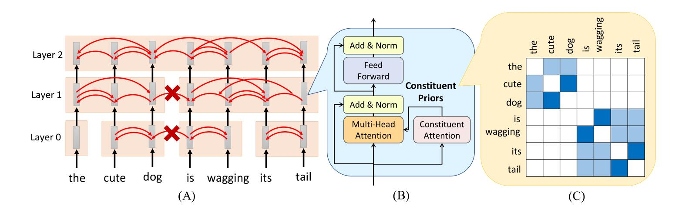
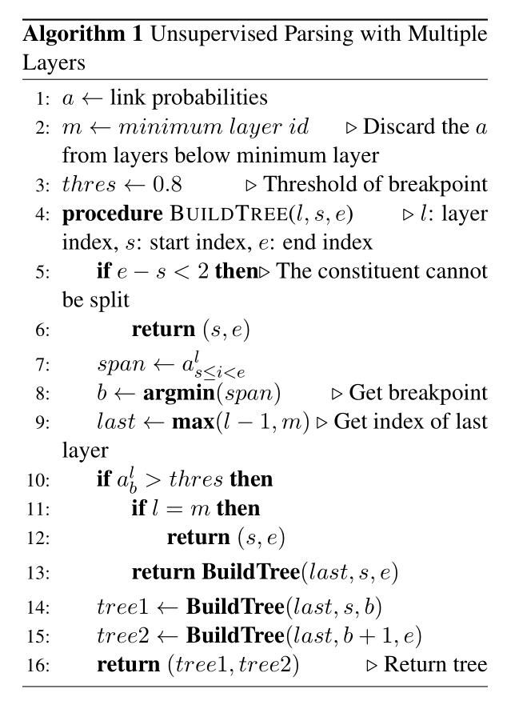
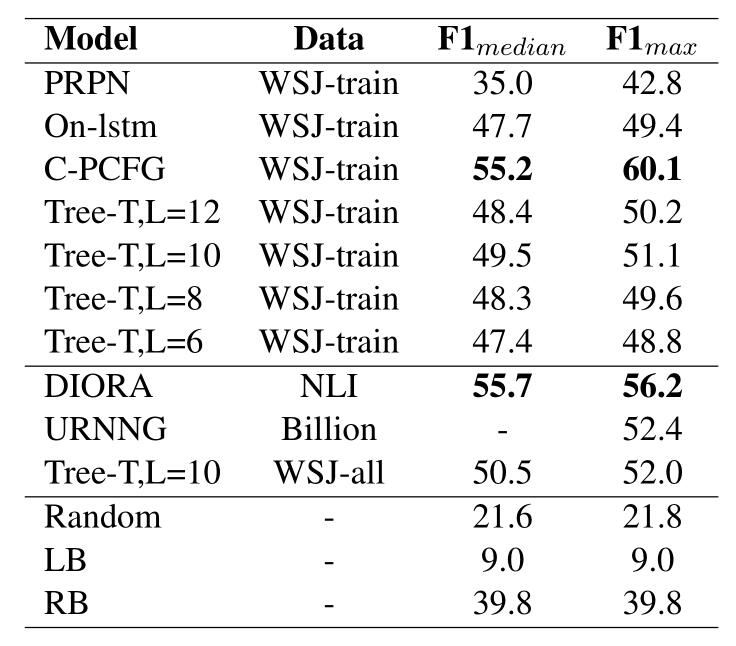
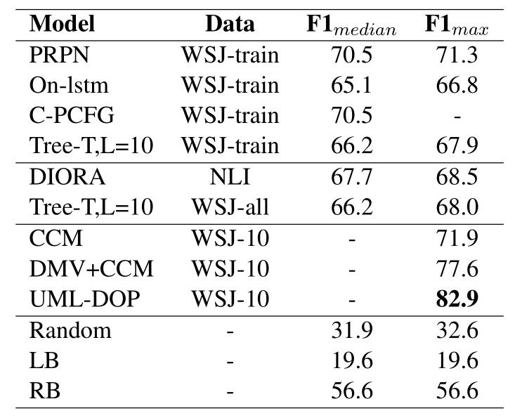
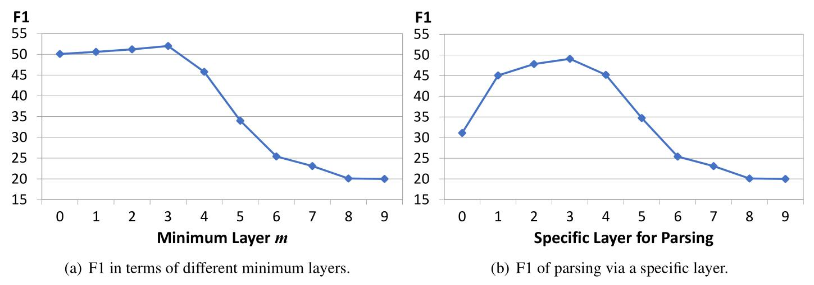
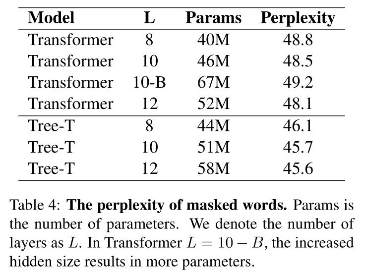

关注公众号【算法码上来】，每日算法干货马上就来！

论文地址：Tree Transformer: Integrating Tree Structures into Self-Attention
介绍
之前其实有很多工作将句法信息融入到了RNN中，例如ON-LSTM和PRPN，用来隐式建模句法结构信息，同时提升语言模型的准确率。本文尝试将句法信息融入到Transformer中，用来赋予attention更好的解释性。同时可以无监督的预测出句子的句法树，并且相比于一般的Transformer，语言模型的性能有所提高。
模型结构

上面这张是模型结构，最主要的区别就是在multi-head attention操作基础上新增了一个成分的attention，用来表示一段span能否构成一个短语。
比如上图中，“cute dog”构成一个短语，所以第0层中这两个单词的attention较大。
而“the cute dog”构成了一个更大的短语，所以第1层中“the”和“dog”的attention较大。
回顾self-attention的操作，主要是计算两个单词的向量点积：
$$
E = \text{softmax}(\frac{QK^{\top}}{d})
$$
这里$d$一般取$\sqrt{d_k}$。但是在本文中，新增加了一个成分先验$C$，其中$C_{i,j}$表示$w_i$和$w_j$在一个短语内的概率。
然后与原来的self-attention做元素乘即可：
$$
E = C \odot \text{softmax}(\frac{QK^{\top}}{d})
$$
注意不同的head之间共享$C$。
那么这个成分先验$C$怎么算呢？
这里把它拆成若干相邻单词在同一短语内概率的乘积。
也就是定义$a_i$为单词$w_i$和$w_{i+1}$在同一短语内的概率，那么$C_{i,j}$就可以表示为：
$$
C_{i, j} = \prod_{k=i}^{j-1}{a_k}
$$
这样只有$w_i$到$w_j$中所有单词都有较大概率在同一短语中，$C_{i, j}$取值才比较大。
当然在实现中会取对数，来避免数值太小。
那么问题又来了，$a$怎么算？
首先类似self-attention，计算相邻两个单词属于同一短语的得分：
$$
s_{i, i+1} = \frac{q_i \cdot k_{i+1}}{d}
$$
这里$d$取$\frac{h \cdot d_k}{2}$，$h$是head数。
注意这里区分了方向，也就是还存在得分$s_{i+1, i}$，并且两者虽然意义是一样的，但是分数不一定相同。
为了防止出现一种问题，也就是所有得分全部相同，然后算出来概率全是1，那就没有意义了，所以要给得分加上限制，也就是归一化。
这里选择归一化一个单词和左右邻居两者的得分：
$$
p_{i,i+1}, p_{i, i-1} = \text{softmax}(s_{i,i+1}, s_{i, i-1})
$$
然后由于$p_{i, i+1}$和$p_{i+1, i}$值不一样，所以取平均：
$$
\hat{a}_i = \sqrt{p_{i, i+1} \times p_{i+1, i}}
$$
这样的话，如果两个相邻单词互相之间连接的概率很大，就会导致$\hat{a}_i$很大，也就说明了这两个单词大概率属于同一个短语。
从第一张模型图中可以看到，成分attention不只计算了一层。
低层可以用来表示两两相邻单词之间属于同一短语的概率，而高层可以表示属于更大的短语的概率。
注意还得满足一个性质，也就是如果两个单词在低层大概率属于同一个短语，那他们高层肯定更大概率属于一个更大的短语。
所以计算方式如下：
$$
a_i^l = a_i^{l-1} + (1 - a_i^{l-1})\hat{a}_i^l
$$
初始化的时候$a_i^{-1}$都设为0。这样对于每一层都可以得到一个成分先验$C^l$。
无监督句法分析

上图是句法树解码算法，类似于句法距离那篇论文的解码算法。
因为$a^l$表示的是相邻两个单词属于同一个短语的概率，所以首先找最小的$a_k^l$，然后从这里将短语划分为两个子短语，然后递归划分下去。
但是这样效果可能不是很好，因为单个一层表示的短语范围其实是有限的，并不能很好的囊括所有的短语。
所以像上图一样，从最高层开始递归开始解码。
首先找到最小值$a_b^l$，如果$a_b^l$大于阈值（实验中为0.8），那说明这个分割点不可信。
如果这时候已经到了第$m$层（实验中设为3），那没办法了，说明了这些单词没有分割点，全当作一个短语就行了。
如果还没到第$m$层，那就继续往下一层找分割点。
而如果小于阈值，说明分割点可信，那就这么划分下去好了。
实验
首先是在WSJ测试集上的无监督句法分析结果：

可以看到Tree-Transformer效果还是好于之前的ON-LSTM和PRPN的，虽然比在NLI上训练的DIORA略差，但也情有可原，毕竟人家训练集大，而且是全局解码，
甚至还达到了URNNG的效果。而层数选择10层是效果最好的。
然后是在WSJ10测试集上的无监督句法分析结果：

可以看到，长度很短的时候Tree-Transformer效果就甚至不如PRPN了，和ON-LSTM相比其实也半斤八两。
论文并没有分析原因，甚至都没有提这个。
然后是采用不同的层做出来的无监督句法分析结果：

可以看到，最小递归到第三层的时候结果最好，而看的层数越少，也就是只看高层的，效果非常的差。
只看单独一层的效果也不大行，这都说明了高层的表示更加的抽象，其实不大适宜句法信息的表示。
而低层又太接近单词层面了，都是表面信息。
这其实和最近的一篇解释bert中attention含义的论文结果一致，中间层的attention表示的是句法信息。
最后是语言模型的困惑度结果：

这里就只和普通的Transformer相比了，结果还是更好的。
因为这里得用masked LM做目标函数，所以没法和ON-LSTM、PRPN等语言模型相比。
其他关于attention解释性等讨论详见论文，我觉得没有多大意思，attention的可解释性最近争论一直很大，强行解释没有意义。
结论
本文提出的Tree Transformer用成分先验表示两个单词属于同一个短语的概率，然后和self-attention联合决定两个单词之间的attention。
并且提出了一种解码出句法树的算法，但是还存在着一些问题。
文中说尝试过用Transformer预训练Tree Transformer，这样loss下降的更低了，拟合的更好，但是解码出的句法树效果更差了。
这其实是有道理的，之前见过一篇分析论文，提到了语言模型训练的好，并不一定代表着句法树学的好，这两者不能划等号。
所以今后如何选择更好更合适的损失函数，值得研究。
这里面还有一些文章可以做，我总感觉本文模型的attention计算方式还是挺牵强的，特别是得分归一化那里，强行将单词左右邻居视为两种不同的角色。
下一步工作我可以在上面进行改进，换一种全新的attention计算方式试试，另外损失函数上面考虑到前一篇文章提到的乱序问题，可以尝试用还原词序作为目标任务。


![论文赏析[TACL19]生成模型还在用自左向右的顺序？这篇论文教你如何自动推测最佳生成顺序](/medias/featureimages/7.jpg)